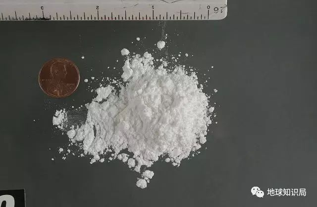
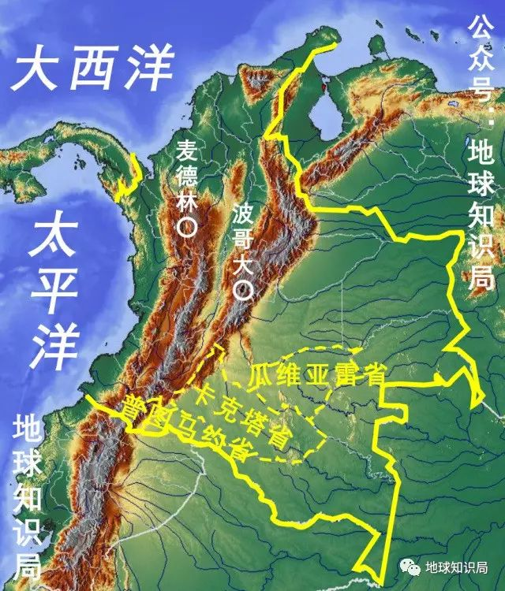
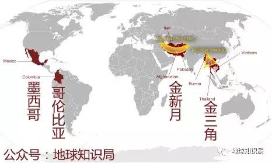

收录于合集

地球知识局微信公号ID：diqiuzhishiju
拉丁美洲是世界上毒品生产和贩运的主要地区之一。据统计,拉美生产的可卡因和大麻占世界总产量的95%以上。
而“银三角”地区就是拉丁美洲毒品问题的重中之重。“银三角”地区包括哥伦比亚的东南部、秘鲁东部和玻利维亚东北部，是可卡因等传统毒品的重要产区。墨西哥在80年代后逐渐也成为国际禁毒工作的重点。
关于拉美毒品地下贸易链条的故事，
请看今天的文章。
“银三角”的特产：
古柯叶
▼
古柯叶是印第安人的“槟榔”，也是优质的营养品，如果不是因为能被制成毒品，或许就能像玛卡一样在中国火一把。
在3000多年以前，安地斯山区就已经开始种植古柯，印第安土著居民通过咀嚼古柯叶子来御寒、充饥、提神，还能治疗胃痛、风湿病、头痛等疾病。
古柯是一种高热能植物，每100克古柯叶中含热量127.5焦(305卡路里焦)。当地人将古柯视为“上帝的礼物”，并把它称为“绿色黄金”（真是先知啊）。
但在现代化学的发展下，古柯叶中的古柯碱（可卡因）被提纯。
古柯碱
▼

在医疗中，它被用作局部麻醉药或血管收缩剂，同时可作强烈的天然中枢兴奋剂，随后便因其对中枢神经系统的兴奋作用而导致滥用。
从1985年起，古柯成为世界性主要毒品之一。
哥伦比亚
全球毒品的厨房
▼
在哥伦比亚麦德林贩毒集团的经营下，从70年代开始，拉丁美洲成为当今世界主要的毒品生产和贩运中心。其老巢哥伦比亚基本上成为可卡因的代名词，以至于哥伦比亚人入境欧美国家时，必遭到仔细的搜查。
麦德林贩毒集团的首脑埃斯科巴
▼
哥伦比亚是世界最大的大麻产地,年产量为7500～9000吨,居世界第一位。同时哥伦比亚又是第三的古柯叶生产基地，年产古柯叶l.2万吨左右,居世界第三位。
这里生产的大麻和从古柯叶提炼的可卡因，主要是走私贩运到美国。据美国缉毒组织估计，哥伦比亚每年向美国销售的大麻达八九千吨，可卡因达50余吨。可以这么说，哥伦比亚是美国最大的毒品供应国。
哥伦比亚的大麻和可卡因生产量仅次于咖啡，已经成为本国第二位的主要出口农作物。
2001年，哥伦比亚全国古柯种植面积曾达到14万公顷，相当于浙江省耕地面积的15%。在国际社会干预下，该数字于2009年下降到9.9万公顷，现在降至4.8万公顷。
银三角地区70%的毒品在哥伦比亚加工生产，粗略估计2007年哥伦比亚提炼可卡因600吨左右，全国共有各类毒品加工厂500多处。
▼
哥伦比亚成为重要的毒品生产加工基地有地理、社会、经济、历史等综合原因的影响。
哥伦比亚位于南美洲西北部赤道以北，安第斯山脉贯穿境内。偏远山地的复杂地形和茂密的森林成为毒品种植和加工的天然屏障。
同时，哥伦比亚是南美唯一同时拥有太平洋和大西洋海岸线的国家，又与秘鲁、巴拿马接壤。地理为毒品的运输和加工提供了极大的便利。
哥伦比亚６０％以上的古柯种植分布在亚马孙地区普图马约、瓜维亚雷和卡克塔三省，那里地理位置偏僻，土壤贫瘠，无法种植密集型的传统农业作物。
雨林深处，穷山恶水
▼

而且由于交通极为不便，此处农产品基本无法运输。再加上受到自然环境的限制，这里的农民不易找到合适的替代作物，于是生活在这里的贫困人口多受雇于毒贩的农场种植古柯。
在分销渠道方面，这里也有优势。在历史上哥伦比亚的走私是传统，毒品走私的方式很大程度上借鉴于此。
历史上走私犯将国内绿宝石、咖啡卖出，在欧美购入家电和奢侈品。走私集团长期经营形成了复杂的利益集团，改行走私毒品几乎是轻车熟路。哥伦比亚绿宝石最大生产者和出口商维克多·卡兰萨就因走私可卡因、洗钱和杀人罪被捕。
哥伦比亚贫富悬殊，两极分化严重。据统计占全国人口21%的人生活在贫困线下，失业率常年高达10%以上。
教育的缺失使失业人口无法有较多的职业选择，很多极度贫困的人加入贩毒集团仅为糊口。一捆古柯叶售价60美元，加工成古柯碱后每公斤6000美元。这对收入微薄的农民来说具有极大诱惑。
马克思说：当利润达到10%的时候，他们将蠢蠢欲动；当利润达到50%的时候，他们将铤而走险；当利润达到100%的时候，他们敢于冒绞刑的危险；当利润达到300%的时候，他们敢于践踏人间的一切法律。
哥伦比亚的地下产业乱象，正是巨大利润的必然产物。
墨西哥
新兴毒品王国
▼
墨西哥的地理位置极为尴尬，南边是“银三角”传统毒品产区，北边是全球吸毒率最高的国家。“可怜的墨西哥，离上帝太远，离美国太近。”
从前南美地区走私毒品到北美的生意基本由哥伦比亚毒枭们垄断，墨西哥人只是从中赚点小钱，直到哥伦比亚超级毒枭埃斯科巴统治时代的落幕。
随后权力真空迅速被新崛起的墨西哥几大贩毒集团填补，逐渐形成足以抗衡政府的势力。之后，墨西哥取代哥伦比亚成为了美国最重要的毒品来源国。每年美墨之间的毒品交易额保守估计约为190亿～290亿美元，占墨西哥全国GDP（2013年）的1%～2%。 直接从业人员超过45万，此外还有320万人的职业与毒品贸易间接相关。
北美市场上流通的大麻主要原产地是墨西哥，但90%以上的可卡因和冰毒都来自哥伦比亚、玻利维亚以及秘鲁。
这些毒品经由墨西哥北上进入美国和加拿大，成为瘾君子手中的至宝。墨西哥毒枭控制了大部分面向北美的毒品分销渠道。
尽管墨西哥国内也有大量的毒品种植田（大麻和鸦片等）以及毒品生产工厂（冰毒等），但总的来说，该国的毒品贩子在毒品产业链上还是主要扮演了中间转销商的角色。
《纽约时报》指出，墨西哥贩毒集团从哥伦比亚或者秘鲁买下一千克可卡因只需两千美元，这一千克可卡因运到墨国内可以卖到一万美元以上。一旦卖到美国，批发价可达三万美元。把它拆成克来零售，同样的一千克就能卖到十万美元——真是比黄金还昂贵。
毒品分销
▼
哥伦比亚、玻利维亚和秘鲁三国从事毒品生产与走私活动的人员有150万，该地区每年毒品集团贩毒收入达3500亿美元。
据联合国统计，秘鲁、哥伦比亚和玻利维亚三国的可卡因产量占全球总量的９８％以上。“银三角”的毒品不仅仅面向美洲市场，还远销欧洲、亚洲、和澳大利亚与新西兰。毒品首先在哥伦比亚地区被加工，随后被走私到各地。
全球主要的毒品生产地
▼

主要路线为
▼
一、美洲路线：
由秘鲁穿过东太平洋，到达美国的洛杉矶、旧金山；
由哥伦比亚经过巴拿马、穿过加勒比海，经古巴到达美国佛罗里达半岛的迈阿密，这里是毒品的主要集散地；
由墨西哥的边境城市新拉雷多进入美国的拉雷多，再向北到达芝加哥等地；
由墨西哥的华雷斯城进入美国的帕索，再向北到旧金山、洛杉矶等地；
甚至直接由墨西哥城直接空运到美国东海岸地区；而在边境线上通过挖隧道运到美国的路线，则不知有多少。
二、欧洲路线：
由哥伦比亚到达巴西的累西腓，越过大西洋到达葡萄牙，再到欧洲内陆；
由玻利维亚经里约热内卢，穿过大西洋到葡萄牙首都里斯本，再北上到达伦敦、阿姆斯特丹或者法兰克福等地。
三、亚洲路线：
由哥伦比亚经大西洋、印度洋、孟加拉湾，到达孟加拉首都达卡。
四、澳洲路线：
由哥伦比亚经大西洋、印度洋到澳大利亚的墨尔本和悉尼等大城市。
银三角的明天
▼
根据数据显示，政府的干预对下游零售价格只有短期或者微不足道的影响。在过去的10~15年间，虽然毒品供应的每一个环节都受到了干预，但是可卡因和海洛因的消费量仍在上升，价格下降，毒品源源不断的到达吸毒者手中。
政府对毒品贸易的干预，只会带来营业成本，而不会对该行业的生存构成什么威胁。铲掉一个大毒枭往往只会造成短暂的权力真空的激烈振荡期，随后又会出现新的毒枭填补权力真空。
有的国家甚至因为经济结构问题对毒品有很强的依赖，其中最严重的当属玻利维亚。
玻利维亚的地质情况不适合种植其他的经济作物，古柯是唯一能保证其民众微薄收入的作物。
受制于特殊的玻利维亚国情，玻利维亚宪法2009年认定，古柯是“文化遗产和可再生自然资源”，有助于“社会团结”。目前，玻利维亚正大力推动古柯叶合法化，在国际范围内已开始讨论这个问题。
毒品产业的支持者按美国支持枪支合法化的组织的逻辑“是人杀人而不是枪杀人”思考，言下之意就是害人的不是毒品而是使用毒品的人。
禁毒的未来到底是把毒品彻底铲除还是毒品被合法化呢？这是一个需要国际社会全盘考虑的问题。
需要强调的是，可卡因的时代要过去了。但导致可卡因没有前途的原因不是来自于政府或者非政府组织，而是因为毒品本身的转变。
安他非命和合成毒品一旦抵达任何一个市场就会非常流行，从而导致传统毒品的销量直线下降。合成毒品的服用方式类似药片，使用方便、对使用者伤害更小、药效发挥更快、不需要注射器、也不用吸食。
未来的毒品市场属于这种新的毒品，这将会对拉美本就不合理的经济结构造成更大的冲击。把毒品产业摆上台面的南美经济将何去何从，仍然有待时间的考验。
筛选：维君
编辑：维君
来源：地球知识局
声 明
国政学人微信公众平台系非盈利学术平台。建立初衷是方便广大学人进行学术研究，促进学术的传播和交流，不做任何商业用途。如有任何权利问题，请直接与我们联系。